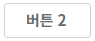
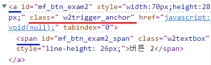
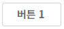
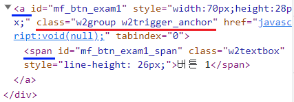
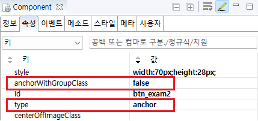

Trigger의 'anchorWithGroupClass' 속성을 사용하여 'type' 속성이 'anchor'일 때 'w2group' 클래스가 추가되지 않도록 설정한 예제입니다.
이 속성은 Trigger의 'type' 속성의 설정 값이 'anchor'로 지정된 경우에만 적용됩니다. 설정을 통해 브라우저에 생성할 HTML 요소의 속성 'class'에 'w2group'를 추가할지 여부를 지정할 수 있습니다. 브라우저에 생성된 HTML 요소의 구성은 동일합니다.
속성의 설정에 따른 동작은 아래와 같습니다.
"true" : [default] 속성 'class'에 'w2group'를 추가합니다.
"false" : 속성 'class'에 'w2group'를 추가하지 않습니다.
'type' 속성의 설정 값이 'anchor' 일 때, HTML 요소의 'class'에 'w2group' 추가하지 않기
'type' 속성의 설정 값이 'anchor' 일 때, HTML 요소의 'class'에 'w2group' 추가하기
브라우저 개발자도구의 Elements(요소)탭을 실행하고, Trigger의 HTML 요소의 'class'를 확인합니다.
1
STEP 1: 초기 상태를 확인합니다.
예제 영역 "HTML 요소의 'class'에 'w2group' 추가하지 않기"에 구성된 Trigger를 확인합니다.Image 1.브라우저(Chrome) 실행 예시

2
STEP 2: 실행된 결과를 확인합니다.
브라우저 개발자 도구를 통해 HTML 요소의 속성 'class'의 값을 확인합니다. 'class'의 설정 값 : w2trigger_anchor 설정 값에 'w2group'이 포함되어 있지 않습니다.
Example 1.브라우저에 렌더링된 HTML 구조
<a class=" w2trigger_anchor" id="mf_btn_exam2" style="width:70px;height:28px;" href="javascript:void(null);"> <span id="mf_btn_exam2_span" class="w2textbox">버튼 2</span> </a>
브라우저에 렌더링된 HTML Elements의 'id'는 실행 시점에 동적으로 부여되어 환경에 따라 다릅니다.
Image 2.브라우저(Chrome) 개발자 도구의 Elements 예시

브라우저 개발자도구의 Elements(요소)탭을 실행하고, Trigger의 HTML 요소의 'class'를 확인합니다.
1
STEP 1: 초기 상태를 확인합니다.
예제 영역 "(기본 설정) HTML 요소의 'class'에 'w2group' 추가하기"에 구성된 Trigger를 확인합니다.Image 3.브라우저(Chrome) 실행 예시

2
STEP 2: 실행된 결과를 확인합니다.
브라우저 개발자 도구를 통해 HTML 요소의 속성 'class'의 값을 확인합니다. 'class'의 설정 값 : w2group w2trigger_anchor 설정 값에 'w2group'이 포함되어있습니다.
Example 2.브라우저에 렌더링된 HTML 구조
<a class="w2group w2trigger_anchor" id="mf_btn_exam1" style="width:70px;height:28px;" href="javascript:void(null);"> <span class="w2textbox " id="mf_btn_exam1_span">버튼 1</span> </a>
브라우저에 렌더링된 HTML Elements의 'id'는 실행 시점에 동적으로 부여되어 환경에 따라 다릅니다.
Image 4.브라우저(Chrome) 개발자 도구의 Elements 예시

1
Trigger의 속성을 정의합니다.
[필수] anchorWithGroupClass="옵션 선택 값"
(옵션 설명)
- true: [default] HTML 요소의 속성 'class'에 'w2group'를 추가합니다.
- false: HTML 요소의 속성 'class'에 'w2group'를 추가하지 않습니다.
(예시)
예시) w2group을 추가하지 않음
anchorWithGroupClass="false"
[필수] type="anchor"
HTML 생성 시 'a' 태그를 사용합니다. 'anchorWithGroupClass' 속성 사용 시 필수 설정입니다.
Image 5.웹스퀘어 스튜디오의 Component View 예시 - HTML 요소의 'class'에 'w2group' 추가하지 않기

Example 3.Source
<!-- Trigger 의 소스 본문 예시 --> <xf:trigger type="anchor" anchorWithGroupClass="false"> <!-- 중략 --> </xf:trigger>
anchorWithGroupClass
type